Skiltbank POC
Offisielle JPG-filer fra Statens vegvesen, lagret lokalt for proof of concept.
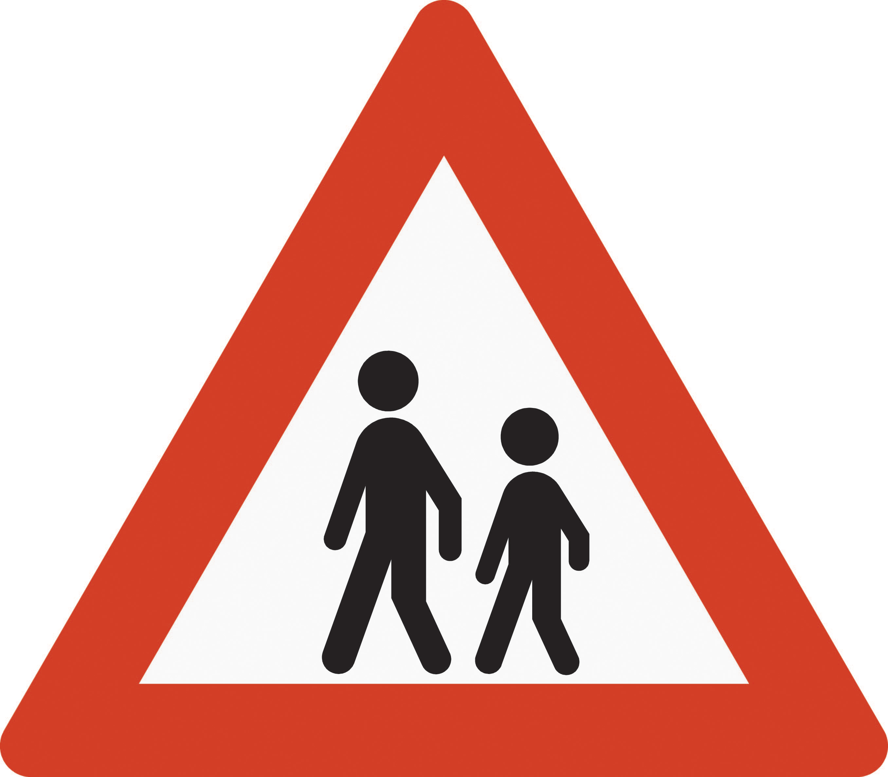
142 Barn
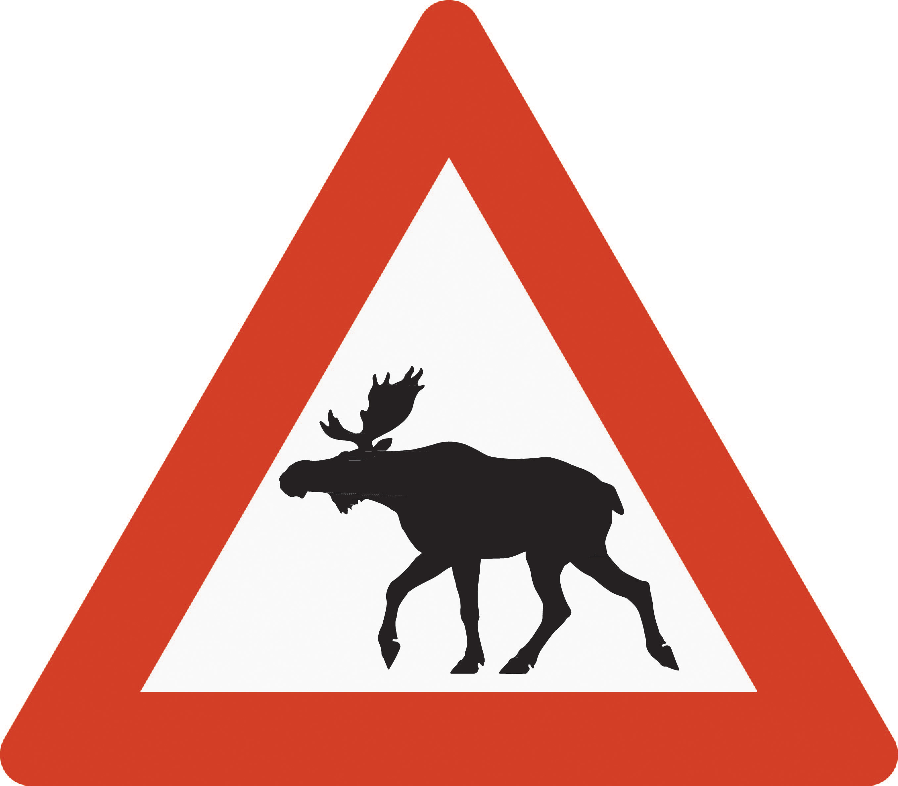
146.1 Elg
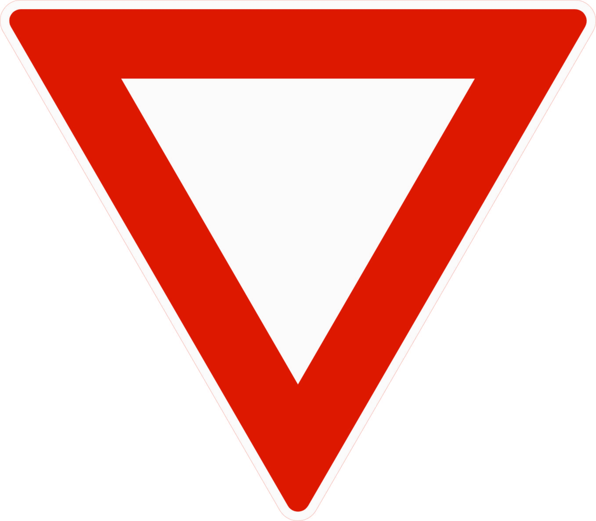
202 Vikeplikt
204 Stopp
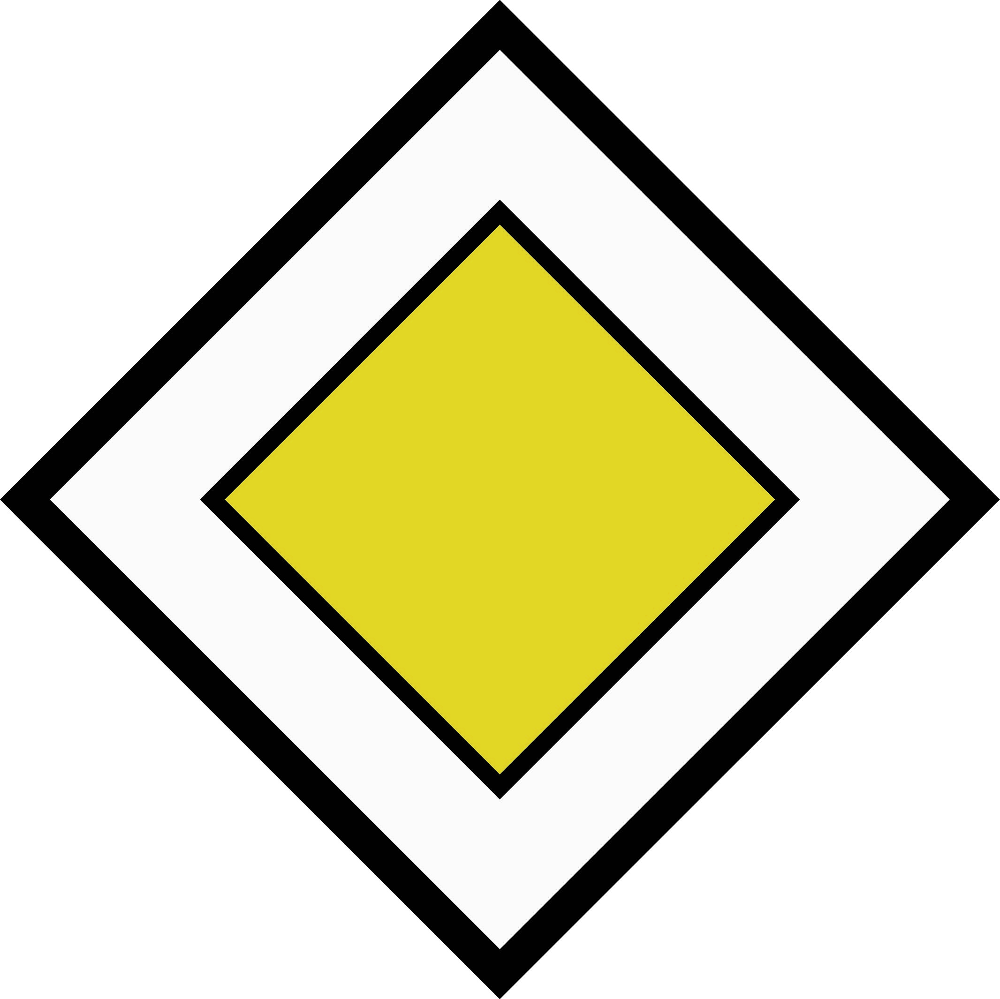
206 Forkjorsveg
208 Slutt pa forkjorsveg
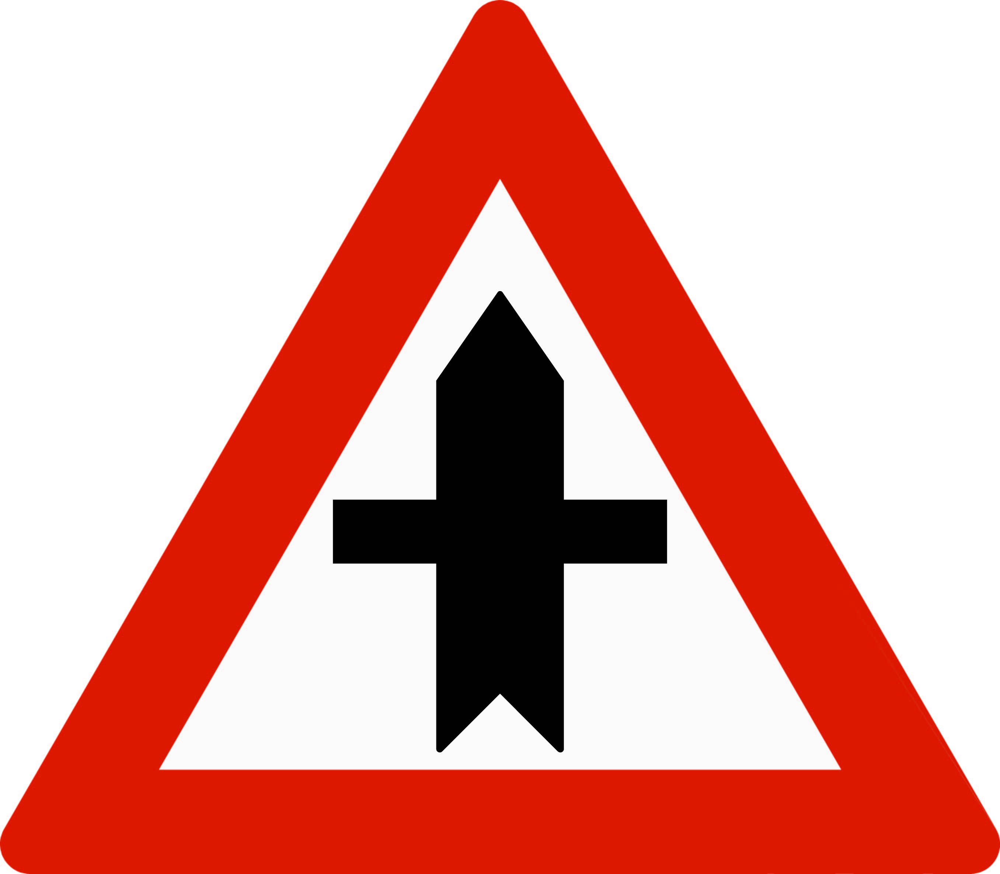
210 Forkjorskryss
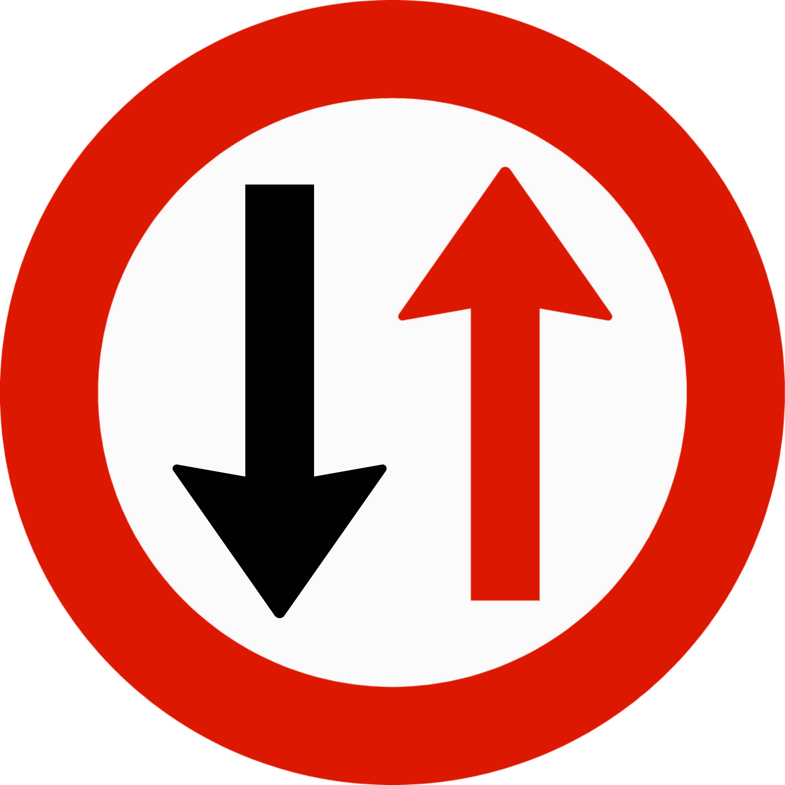
212 Vikeplikt overfor motende
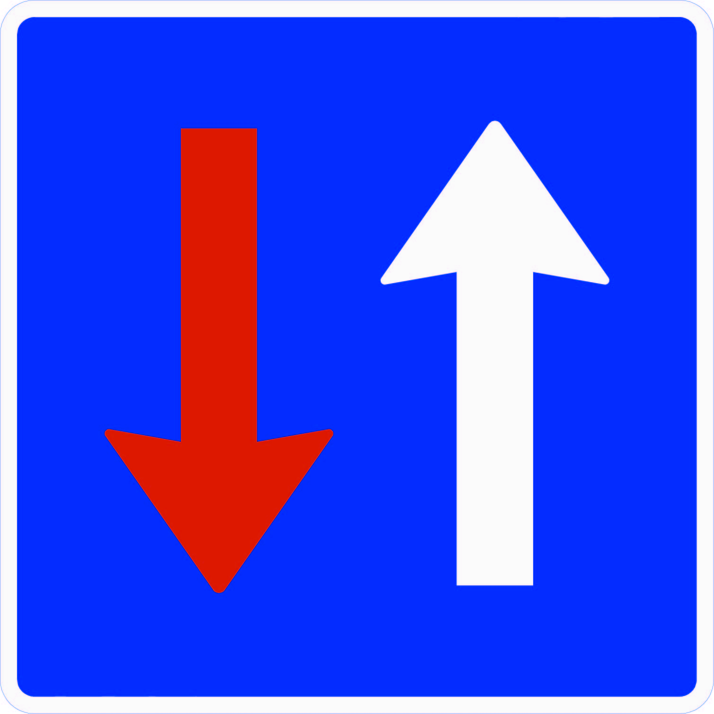
214 Motende har vikeplikt
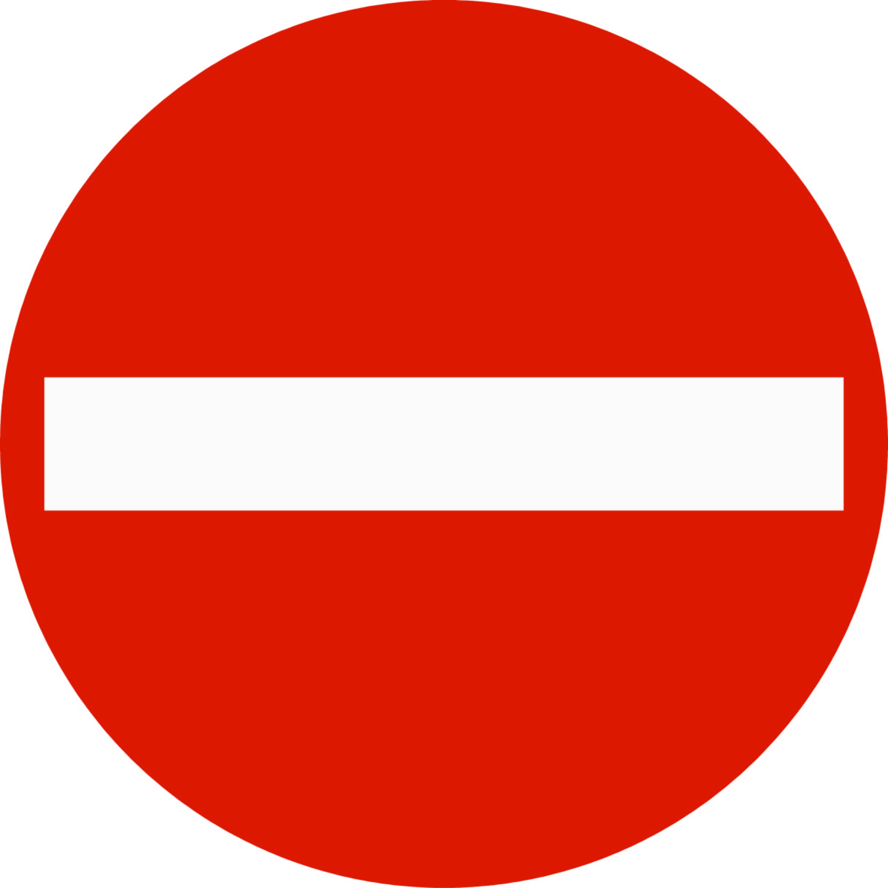
302 Innkjoring forbudt
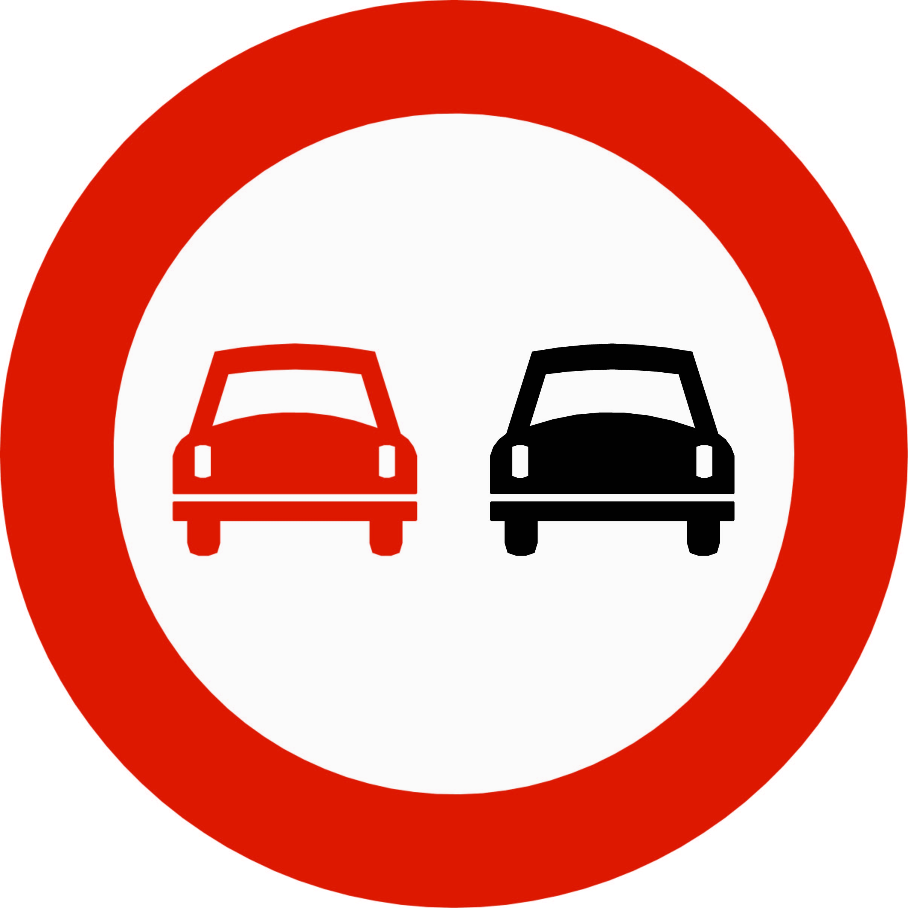
334 Forbikjoringsforbud
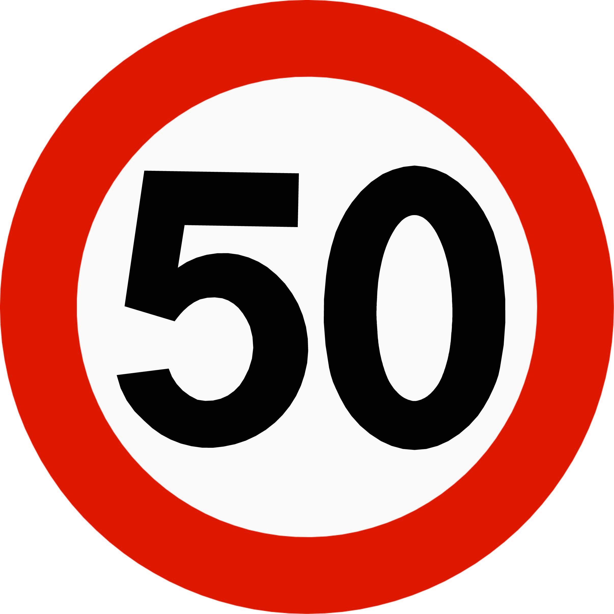
362.50 Fartsgrense
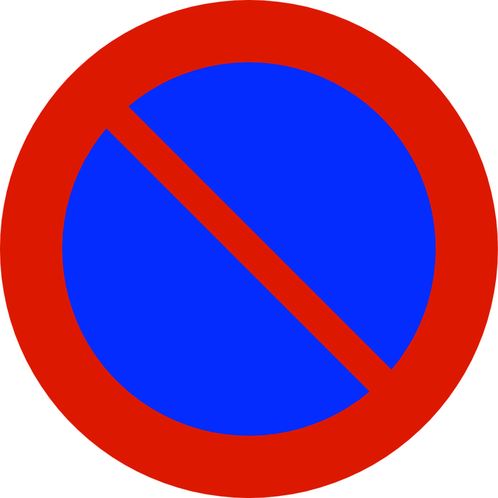
372 Parkering forbudt
406 Pabudt rundkjoring
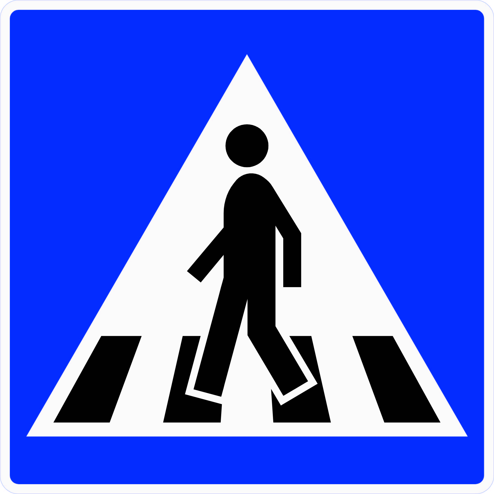
516 Gangfelt
605 Bensinstasjon
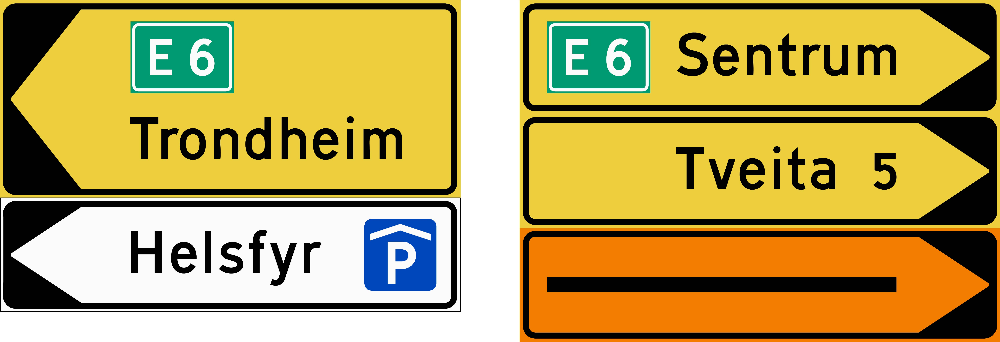
713 Vegviser
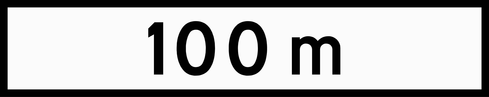
802 Avstand
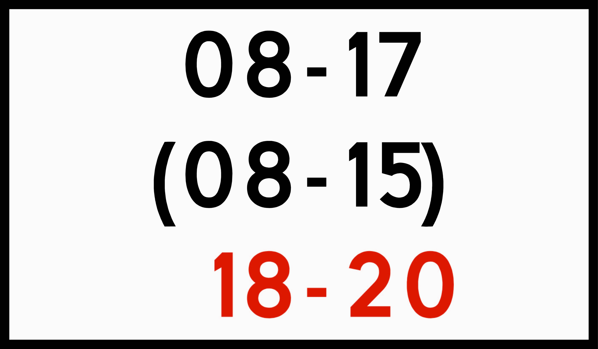
806 Tid
904 Retningsmarkering
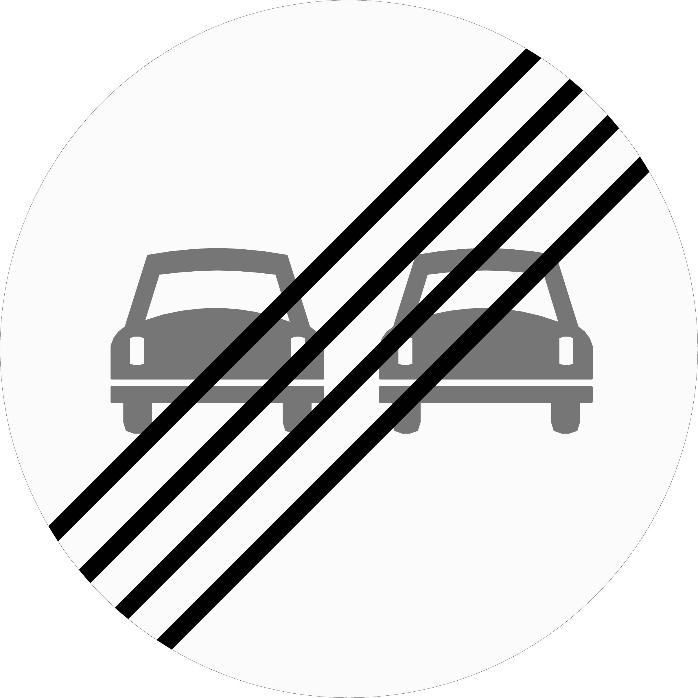
336 Slutt pa forbikjoringsforbud
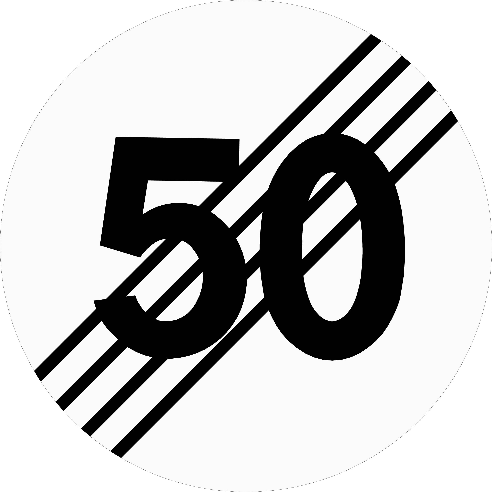
364.50 Slutt pa saerskilt fartsgrense